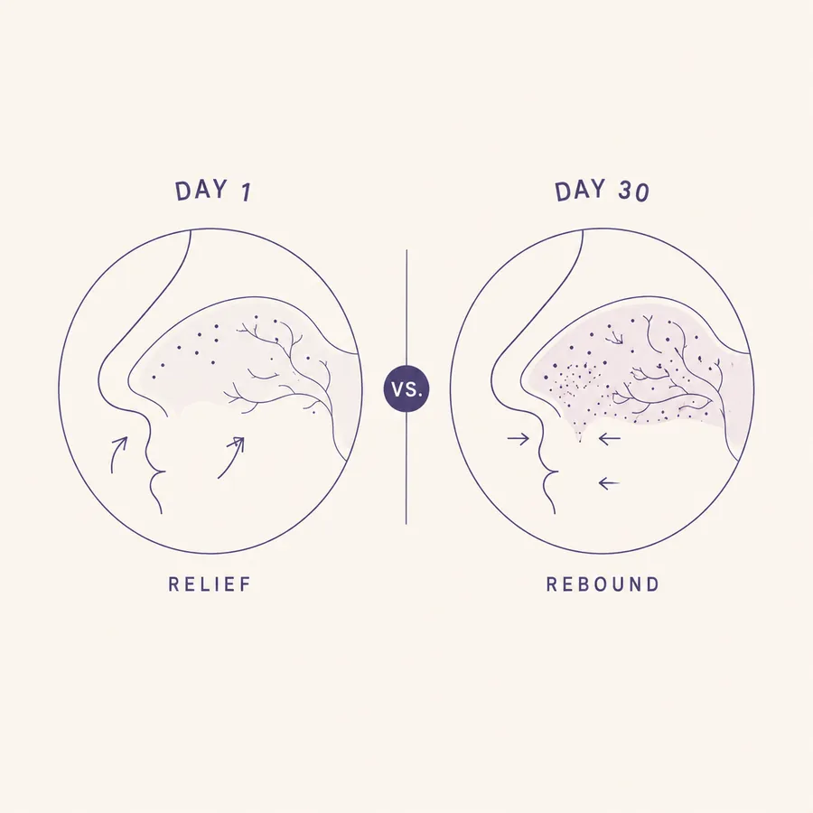
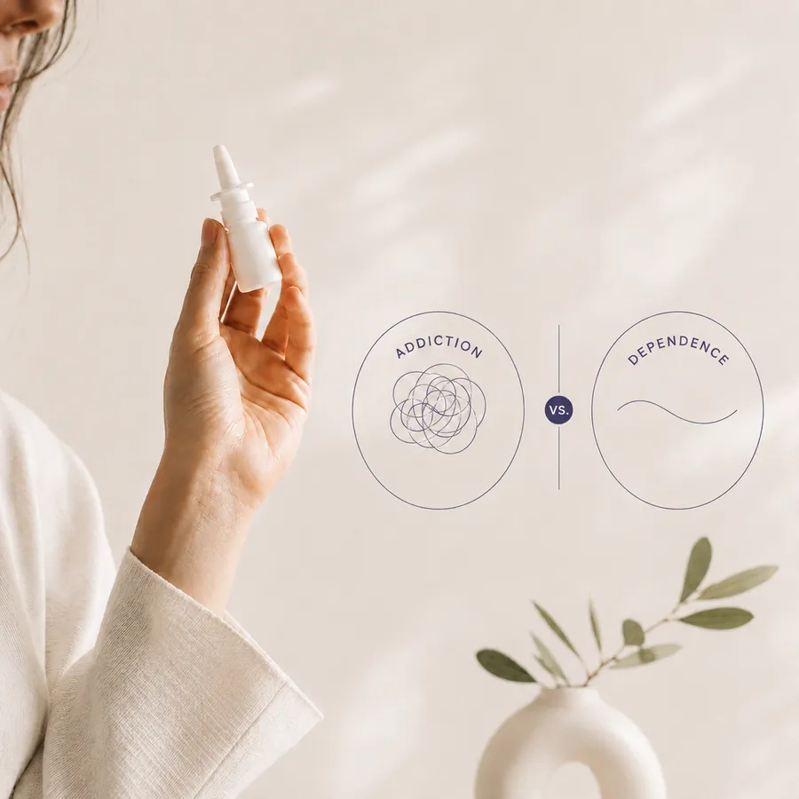

What is rebound congestion?
Rebound congestion (rhinitis medicamentosa) is nasal stuffiness caused by overusing decongestant nasal sprays such as Afrin (oxymetazoline), usually after more than 3–5 days in a row. The spray works for a shorter time with each dose, congestion returns worse when it wears off, and the cycle continues until the spray is stopped. It is reversible: most people recover in weeks to a few months with a steroid nasal spray and saline.
The plain-language definition
You spray Afrin. Blood vessels in your nose shrink. You breathe again. Magic. But after a few days, your nose stops responding unless you keep spraying. Stop spraying for a few hours? Vessels swell back bigger than before. Now you're more congested than the day you started. Spray again. Repeat.
That cycle has a name: rhinitis medicamentosa — Latin for "rhinitis caused by medication." Most people just call it rebound congestion, or Afrin addiction.
"Rhinitis medicamentosa is a type of swelling and inflammation in your nose caused by overusing decongestant nasal sprays. Symptoms include congestion that worsens after stopping the spray."Cleveland Clinic — Rhinitis Medicamentosa
How your nose normally works
Your nose is lined with mucosa rich in two kinds of blood vessels:
- Resistance vessels (arterioles, arteriovenous anastomoses) — regulated mainly by α2-adrenergic receptors.
- Capacitance vessels (venous sinusoids) — regulated by α1 and α2 receptors.
When you're calm, sympathetic nerves quietly release norepinephrine that keeps these vessels constricted just enough to keep your nose open. When you catch a cold or get hit by an allergen, inflammation overrides that sympathetic tone — vessels dilate, fluid leaks into tissue, you get stuffed up.
What Afrin does to it

Oxymetazoline — the active ingredient in Afrin, Sinex 12-hour, Dristan, Zicam Intense Sinus and Mucinex Sinus-Max — is an imidazoline. It binds α-adrenergic receptors directly, mostly α2, on both kinds of vessels. Effect: massive vasoconstriction, drained venous sinusoids, wide-open nose. Subjective relief in about 25 seconds. Duration 8–12 hours.
Same class: xylometazoline (Otrivin, Otrivine, Olynth — common outside the US), naphazoline (Privine), and tetrahydrozoline (Tyzine).
Phenylephrine (Neo-Synephrine nasal spray) works differently — it's a β-phenylethylamine sympathomimetic, mostly direct α1 agonism with some β-activity. Less effective per dose than the imidazolines and faster wear-off, which ironically gives it faster-onset rebound.
Four reasons rebound happens
The clinical mechanism is best summarized in the NIH's StatPearls article on rhinitis medicamentosa:
- Ischemia-induced edema. Constant vasoconstriction starves the mucosa of oxygen. Tissue then swells with interstitial fluid that can't drain.
- Tachyphylaxis (receptor desensitization). α-receptors get overwhelmed and downregulate. Each spray works less. Your body's own norepinephrine can't take over because the receptors are exhausted.
- α2 negative feedback. Imidazolines also activate α2 prejunctional autoreceptors, which signal "stop releasing norepinephrine." Your body's own decongestant gets switched off. When the drug wears off, you're worse than baseline.
- β-rebound vasodilation. Sympathomimetics have mild β activity that outlasts the α effect. When the constriction drops, β-induced dilation rebounds on top.
The short version
Afrin works by squeezing nasal blood vessels. Your nose responds by (a) becoming less sensitive to the drug, (b) shutting off its own version of the drug, and (c) holding onto fluid that can't drain. The result is a worse stuffy nose than the one you started with.
The smoking-gun evidence
Two papers proved this isn't speculation — it's measurable in healthy people.
Vaidyanathan et al. 2010 (Am J Respir Crit Care Med 182:19–24) gave 19 healthy volunteers oxymetazoline three times daily for 14 days. Peak nasal inspiratory flow declined significantly and the dose-response curve shifted rightward. Three days of intranasal fluticasone reversed it. Placebo didn't. This is the paper proving tachyphylaxis is real, measurable, and reversible.
Hallén, Enerdal & Graf 1997 (Clin Exp Allergy 27:552–558) gave 20 patients with established rhinitis medicamentosa fluticasone 200 μg/day for 14 days. Mucosal swelling reduced versus placebo, onset day 4 vs day 7. Histamine sensitivity was restored.
Tissue damage timeline (animal models)
| Time on chronic decongestant | Tissue change |
|---|---|
| Day 5 | Ciliary loss begins (rabbit model) |
| Week 1 | Epithelial cell damage |
| Week 2 | Subepithelial edema |
| Week 3 | Fibrosis, hypertrophy, abnormal microtubules |
| Week 5 | Total cellular disorganization |
| Week 6 | Goblet-cell hyperplasia peaks |
| Week 8 | Squamous metaplasia; blood vessels sclerose |
In severe long-term human cases, the consequences include septal perforation from chronic ischemia, atrophic rhinitis (the paradoxical "empty" feeling), anosmia (loss of smell), and persistent turbinate hypertrophy requiring surgery.
The benzalkonium chloride wrinkle
BKC is a common preservative in nasal sprays. Multiple studies (Graf 1995, 1996, 1999) show BKC alone aggravates rhinitis medicamentosa — even without decongestant — by reducing mucociliary clearance. For decongestant sprays, prefer BKC-free formulations. For corticosteroid sprays, the harm is debated and standard concentrations are likely fine.
Is it actually addiction?

Clinically the answer is: physical dependence + behavioral compulsion, not chemical addiction in the opioid sense. There's no reward-circuit hijack, no euphoria. But a 2025 qualitative study in the Journal of Behavioral Addictions found all six of Griffiths' classic addiction components — salience, mood modification, tolerance, withdrawal, conflict and relapse — in long-term users.
Whether you call it addiction or dependence, it traps people for decades. It needs structured quitting. Start the playbook →
Every source used on this site is listed on the sources page. Related: does pairing oxymetazoline with a steroid prevent rebound?